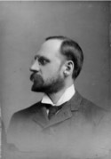

Beaubien-Perrault-Benington - Person Sheet
Beaubien-Perrault-Benington - Person Sheet
NameM. Josephine Larue47
Birth24 Mar 1868, Québec, Québec38
Death23 Nov 1957, Outremont, Québec
Burial27 Nov 1957, Notre-Dame-des-Neiges, Montréal, Quebec75
FatherDr. Francois Alexandre Hubert Larue (1833-1881)
MotherMarie Alphonsine Philomène Panet (1839-1905)
Spouses

Birth28 Feb 1865, Montréal, Québec
Death3 Mar 1949, Outremont, Québec
Burial5 Mar 1949, Notre-Dame-des-Neiges, Montréal, Quebec75
Occupationadministrateur, maire
FatherHon. Louis Joseph Denis Benjamin Beaubien (1837-1915)
MotherSuzanne Lauretta Stuart (1844-1936)
Marriage11 Feb 1893, Notre-Dame, Québec, Québec
ChildrenPierre Yves Charles Louis (1894-1960)
M. Alphonsine Laurette Elmire (1895-1987)
Marie Josephine (1896-1983)
Marie Luce Alice Emma (1897-1984)
Andrew Stuart (1900-1978)
Philippe de Gaspé (1901-1978)
Luc Joseph (1903-1988)
Marie Elmire (Mimi) (1906-1990)
Alfred Claude Panet (1908-1986)
Luc Maurice (1911-1913)
Notes for M. Josephine Larue
38 [bap] parrain Leonidas Larue, medecin de Ste Foy; marraine Henriette Harwood, epouse de Eugene Panet